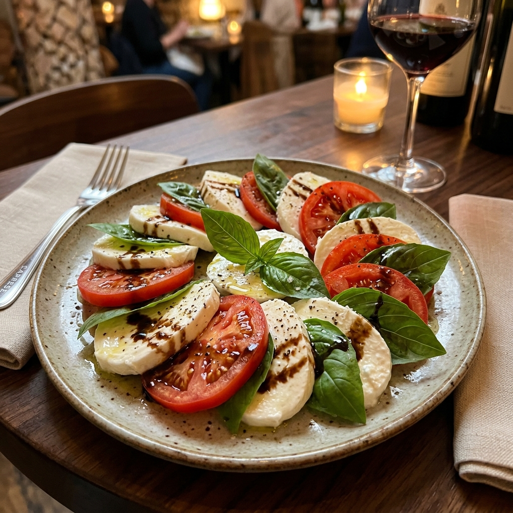
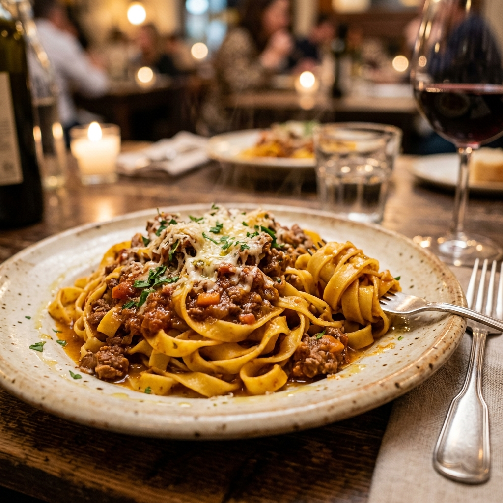
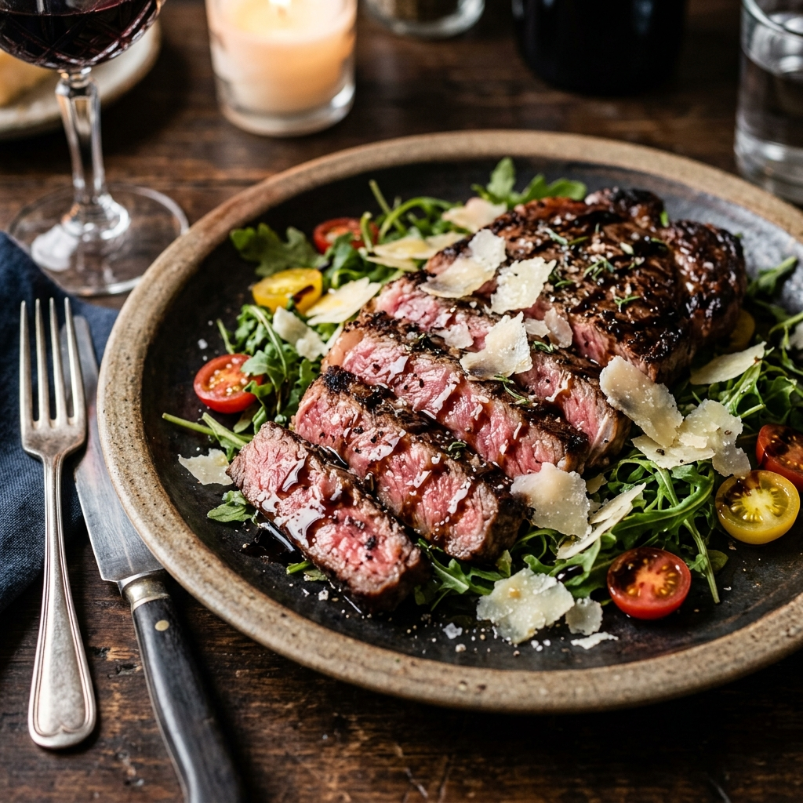
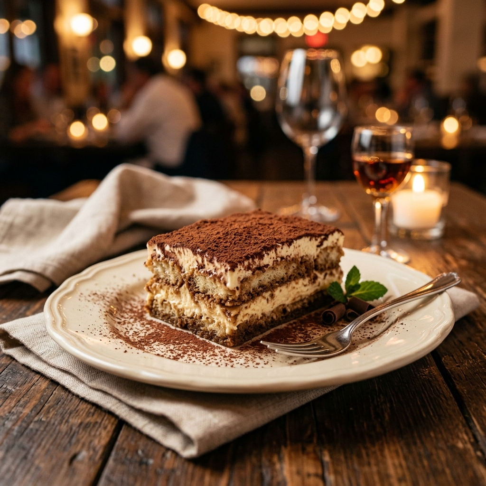

お料理
アラカルト
水牛のモッツァレラチーズとチェリートマト、新鮮なバジルの香り
パルマ産18ヶ月熟成プロシュートとセルバチコのサラダ仕立て
豊洲市場から仕入れた本日の鮮魚を、爽やかな柑橘のドレッシングで

毎朝手打ちするモチモチの平打ち麺に、じっくり煮込んだ和牛のラグーソース
たっぷりアサリの旨味と、白ワイン、ガーリックの香りが食欲をそそる一品
芳醇な黒トリュフの香りと、パンチェッタ、ペコリーノチーズの濃厚な味わい

薄く叩いた仔牛肉を、香草パン粉でサクッと黄金色に焼き上げました
魚介の旨味が溶け込んだスープが絶品。チェリートマトとオリーブと共に
厳選和牛の表面を香ばしく焼き、中はレアに。バルサミコソースとパルミジャーノ

マスカルポーネの濃厚なコクとエスプレッソの苦味が調和した伝統的ドルチェ
なめらかな口当たり。甘酸っぱい季節のフルーツソースを添えて
旬のフルーツや素材を活かした、さっぱりとした自家製ジェラート

コース
ランチコース ¥3,800
ちょっと贅沢なランチタイムを彩る、前菜からドルチェまでの全4品のコースです。
ディナーコース ¥8,500
当店の魅力を存分に味わっていただける、全5品のスタンダードなディナーコース。
記念日コース ¥12,000
乾杯酒から始まり、メッセージプレートで締めくくる特別な日のためのフルコース。